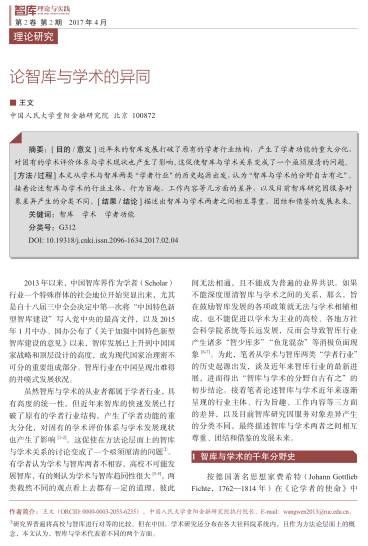

收录于合集

论智库与学术的异同
作者王文系中国人民大学重阳金融研究院执行院长、教授，本文刊于2017年4月《智库理论与实践》。论文文献索引请查询“智库理论与实践”官网全文。
2013年以来，中国智库界作为学者（Scholar）行业一个特殊群体的社会地位开始突显出来，尤其是自十八届三中全会决定中第一次将“中国特色新型智库建设”写入党中央的最高文件，以及2015年1月中办、国办公布了《关于加强中国特色新型智库建设的意见》以来，智库发展已上升到中国国家战略和顶层设计的高度，成为现代国家治理密不可分的重要组成部分。 智库行业在中国呈现出难得的井喷式发展状况。
虽然智库与学术的从业者都属于学者行业，具有高度的统一性，但近年来智库的快速发展已打破了原有的学者行业结构，产生了学者功能的重大分化，对固有的学术评价体系与学术发展现状也产生了影响。这促使在方法论层面上的智库与学术关系的讨论变成了一个亟须厘清的问题[1]。有学者认为学术与智库两者不相容，高校不可能发展智库，有的则认为学术与智库趋同性很大，两类截然不同的观点看上去都有一定的道理，彼此间无法相通，且不能成为普遍的业界共识。如果不能深度厘清智库与学术之间的关系，那么，旨在鼓励智库发展的各项政策就无法与学术相辅相成，也不能促进以学术为主业的高校、各地方社会科学院系统等长远发展，反而会导致智库行业产生诸多“智少库多”“鱼龙混杂”等消极负面现象。 为此，笔者从学术与智库两类“学者行业”的历史起源出发，谈及近年来智库行业的最新进展，进而得出“智库与学术的分野自古有之”的初步结论。接着笔者论述智库与学术近年来逐渐呈现的行业主体、行为旨趣、工作内容等三方面的差异，以及目前智库研究因服务对象差异产生的分类不同，最终描述智库与学术两者之间相互尊重、团结和借鉴的发展未来。

本文刊于2017年4月《智库理论与实践》
智库与学术的千年分野史
按德国著名思想家费希特（Johann Gottlieb Fichte，1762—1814年）在《论学者的使命》中的定义，无论是从事智库工作的人，还是从事学术的人，都可以视为“学者”，即“本质上具有与知识的生产、传播相关联的使命”。这种定义同样能概括中国历史上知识分子的起源。自古以来，中国学者就有“修身齐家治国平天下”递进式的个人修养与远大理想，以及所谓“出世”“入世”的使命差异。
一般看来，所谓“出世”者，讲究“天下有道，丘不与易也”（《论语·微子》），希望探索天下大经、大法、大道，问询宇宙万物的本源，深究个中细节的原理，像是现今从事学术的学者群体，旨在关心与现实相对较远的话题与理论思考；所谓“入世”者，则讲究“群臣有待问之时，谏官有请对之时”（《读通鉴论》），投身于社会与国家事务，为决策者出谋划策，辅佐幕主平邦治国，与当代智库学者的角色一脉相承，旨在探索与政策紧密相关的问题并寻求解决方案。
综观历史，随着社会运行规则的不断演化与国家行政管理的日趋复杂，学者功能也随之发生了诸多富有传承意味的时代变迁。 从先秦子学、两汉经学、魏晋玄学，到隋唐佛学、儒释道合流、宋明理学，有一批介乎官民之间、或有官衔但无意为官的读书人，志向远大，心忧天下，追求精神自由，抒发政治主张，阐释人生哲理，留下了脍炙人口的名篇佳作与宝贵的文化遗产。这也是常为人所称道的“学术传承”。另一批学者则“习得文武艺，货与帝王家”，被封建统治者所招揽，成为决策者所依重的智囊，如春秋战国门客、三国谋臣策士、明清师爷与幕友等。他们博闻通识，经世致用，察微知隐，计远谋深，议失纠谬，或辅佐决策者争霸天下，或献策朝廷巩固统治，或建言帝王调整政策，成为“了却君王天下事，赢得生前身后名”的典范。
19世纪初，学科分野在欧美国家开始了专门化分工的进程，经济学、政治学、社会学、历史学、人类学和东方学在人文与社会科学内部逐渐严格地分化，使得现代学术的学科体系得以完善，并缓慢地移植到了中国高校，塑造了20世纪以来中国哲学社会科学的一级学科、二级学科现代学术专业划分体系。随着高等教育的普及化，在高校里从事教学与学术研究工作的人数急剧上升，成为学者群体中的主体。 相比之下，现代智库在中国发展要更晚一些。 在经历了新中国成立的雏形时期、改革开放初期的恢复发展时期，直到20世纪90年代，智库发展逐渐随着党的十五大、十六大所提出的“繁荣决策科学与发展咨询产业”“推进决策科学化、民主化”等决策呈现了蓬勃发展的繁荣状况。2013年4月后，中国特色新型智库时代正式开启，智库建设正式纳入到国家软实力发展与建设体系的国家发展战略高度，尤其是在中办、国办下发《关于加强中国特色新型智库建设的意见》，专门把来源于学术重镇高校的智库作为中国特色新型智库建设的重要力量，许多高校学术研究机构出现了智库化的转型。
出现学术研究机构的智库化转型，而不是相反的状态，直接的现实原因在于，智库学者数量与学术学者数量的不平衡性。 据上海社科院智库研究中心发布《中国智库报告（2014）》数据显示，中国智库研究人员约3万人。据教育部统计，截至2015年，全国各级各类学校共有专任教师1，539万人，其中高等教育（含高等职业教育）教师157万人。也就是说，粗略地比较，智库与学术两个行业的从业人员的比例为约1∶50，智库人员数量明显存在着弱势，这使智库学者在整个学者行业处于绝对的少数、弱势，尤其在高校里，更导致智库供给远远跟不上决策需求。更重要的是，以学术评价体系为主要指标的高校，学术学者人数较多，也客观上造成了智库学者的研究成果很难被高校认可、很难被高校评价体系完全接受的现象。
事实上，像季羡林、李学勤等老一代学术大师早已撰文疾呼“重写学术史”，因为中国学术有独立的传统，应该更多地聚焦在古代学术流派与当代学科体系关系的发展脉络与转型传承，强调古代智囊历史演变与现代学者责任的传承关系。可惜的是，诸多智库起源研究的文献中，多是着墨于改革开放以后中国借鉴西方智库机制建设与存在形态、政府决策的重要咨询功能在中国体制的移植等等。虽然这符合中国近现代思想“西学东渐”的部分事实，却忽视了智库演变在中国的内生性，容易使人忽视了学者自古传承、与生俱来的家国情怀与时代使命。换句话说，“服务国家”“对策研究”本身应是学者（至少是相当一部分学者）数千年来中国博大精深的学养血脉传承进程中的固有基因，而不是学者群体中的新增或额外任务，也不是“另类”“不务正业”的工作内容，更不是西方智库形式在中国的复制品。
可见，虽然学术与智库两者都在从事着费希特所说的“知识学习、生产与传播的工作”，都以写作调研、发表文章为主要工作方式，但在现代社会的文化观念中，“学者”的概念被视为“经过严格知识分化后所残存的文化身份概念”，这个概念是精英化的、模糊化的、学院化的，需要有更多使命感、具体工作内容上的识别。这个道理就像同一个大行业内，也需要有更多细化的识别，比如证券业、保险业、银行业都属于金融行业，但彼此差别很大；报纸、电视、广播、网站都应是媒体行业，但差别同样巨大。 回归历史溯源会清晰地发现，自古以来，智库与学术都属于学者行业，但分野早已存在，两者有许多截然不同的地方。当然两者也有不少共通性、融合性、同一性。
智库与学术的三大差异
一般认识上讲，学者是研究行业的分支。 研究行业的人员大体可分为政府政策研究人员、各类社会咨询服务行业人员、学术学者、智库学者等四大类。四类人员与经济市场关联度、政府政策关联度各不相同。如图1所示，从理论上看，政府政策研究人员需要紧跟时事，针对社会难点、痛点、热点进行研究，出台政策，撰写决策者演讲稿，寻求社会与国家治理的解决方案，但这些研究工作进程取决于政府工作的议程设置，不能以咨询服务或购买的手段来推动或获得，相对超然于经济市场。各类社会咨询服务行业则正好与之相反，专门为社会机构、企业部门提供有偿、有价的知识生产与研究服务。
研究类别的象限图
以政策与市场关联度来衡量，智库与学术的区位差异也会变得明显。 学术学者一般离经济市场、政府政策都较远，相反，智库则必须离经济市场与政策政治都较近。以美国为例，智库需要大量的社会捐赠，虽然智库未必都为捐赠者直接服务，但智库研究的方向、理念却通常与捐赠者密切相关。智库的优劣与捐赠额度有极强的正相关性，一般而言，如像兰德公司、布鲁金斯学会等在全球排名靠前的智库年预算都在1亿美元左右甚至更多。智库大量聚集在美国的政治中心首都华盛顿，号称“美国智库街”麻省大道与白宫、国务院、财政部均只有方圆1~2km的距离，可谓政策研究的“天时地利”。当然，智库与学术的区别除了在宏观上的政策、市场关联度之外，还有3点微观上的差异：
- 第一，从国际经验看，智库与学术存在着从业主体的重大差异。从事智库研究或从事学术研究的往往是两批不同的学者。两批学者之间存在着职业转化[2]。由于从业主体的差异，从业者的头衔与称呼也有不同。学术学者一般被称为“纯学者”，或被称为“理论研究的学者”，大多集中在高校，在中国还有各级社科院系统。一般来讲，这个群体需要博士学位，有相对严格的学科划分与延承，很少出现跨学科的博士担任另一个学科教授的案例。学术学者还有严格的等级制职称序列，分为“教授”“副教授”“讲师（助理教授）”等，或“研究员”“副研究员”“助理研究员”三级类同的序列。虽然“教授”一词最早出现在《史记·仲尼弟子传》“子夏居西河教授，为魏文侯师”一句中，但在中国，“教授”一词的现代内涵受西方影响很大，起源于1912年。当年，中华民国教育部公布的《大学令》第十三条规定中正式提到“大学设教授、助教授”。1927年国民党政府教育行政委员会公布的《大学教员资格条例》中，更详细的提出“大学教员分教授、副教授、讲师、助教四级”。在学术领域，学者进入“教授”序列，就等于获得了“终身制”的职位。
相比之下，智库从业范畴更广泛。 官方智库、社会智库、高校智库，加之这些年来企业智库、科技智库等新的智库种类，囊括了更广范围内的知识分子群体。智库的管理运营需要多元化人才互补，既需要研究型人才，也需要对外交流与合作型人才，还需要成果传播型人才等等，要形成一整套智库产业。因此，智库从业人员的职能划分也相对较广泛，不只是从事研究，还有从事传播、会务、行政、筹款等。智库内的职位通常也以“主管”“副主管”“高级研究员”等居多。除了在中国等少数国家，智库学者很少有终身制，尤其在美国，智库岗位的市场竞争相当激烈，1年至3年期的聘用是普遍现象，职业化、产业化和专业化已是欧美国家智库的基本状况。从学历上讲，智库不一定需要博士学位。美国智库从业者在1960年到1980年之间有博士学位的占23%，1980年以后智库从业人员仅有13%拥有博士学位。智库的学科延承性相对较弱，下属机构的划分一般不根据学科，而以研究对象来划分，比如，美国许多大智库都会专门设中国研究项目，会聘请国际关系、政治学、区域研究、经济学甚至社会学等多方面的专业人才。在美国一流的国际研究智库，都不像大学那样会设置国际关系学院或系，却有亚太研究、非洲研究、拉美研究、反恐研究项目组等，每个项目组一般都会有跨学科的人才配置团队。
- 第二，从价值理念看，智库与学术从业者的职业旨趣也有明显不同。智库学者比学术学者更注重即时影响。
学术学者往往被视为“高深学问”的执着追求者和守护人，讲求学术自由，在从事学术活动过程中不受外界不合理因素的约束、限制与干扰，并追求学术理想，未必在乎现世的名声，有时甚至渴求作品“藏之名山，传之后世”。中国学术最早出现在春秋战国时代，是孔孟的治国之术演变而成的，在探索天下之道的过程中逐步建立了古代学术的基本内容框架。现代学术学者把追求学术理想，追求真理、坚持真理、捍卫真理当成了学术的使命与任务。学术学者的研究有的来自实证性的经验来源，有的则是对已有理论成果和理论的逻辑演绎或一般性价值的探求。学术研究的优劣是基于学术同行的看法和意见，特别是学术期刊刊文的标准和判定的依据。 学术研究的进步往往是建立在学科框架与学术前人的基础之上，寻求在思想层面的突破。
智库学者则有明确的定位，不得不研究政府决策层感兴趣、希望寻求解决方案的问题，希望影响当世的政府决策层。 判断智库研究的好坏在于决策层的反馈与实践的可操作性，智库的研究成果是否发展关键在于来自现实难题的解决程度。“智囊”最早记录于《史记·樗里子甘茂列传》，其中记载：“樗里子滑稽多谋，秦人号曰‘智囊’”，可见，智库学者天生就是要有为决策者谋的功能。智囊群体有着各个时代的特色，但都是以当代政府为服务对象。智库学者更需要有士大夫情结，当下的说法就是“家国情怀”，即对推进国家与社会进步的责任感与使命感，正如范仲淹的那首名句“先天下之忧而忧，后天下之乐而乐。”
- 第三，从运营方式看，智库与学术学者之间的工作内容存在很大差异。智库学者往往比学术学者拥有更复合的任务。
学术的工作内容主要是以严格的理论假设、方法论证、逻辑推演、审慎结论来研究对象，特点是行文必有出处等。同时，高校内学术学者一般还有教学、培养人才的任务。多数学术学者都是“个人作战”，长期潜心于单一学科某一固定方向，不定期地在学术期刊上发表一些学术论文，对时效性的要求相对较弱，对媒体报道的需求也不太强烈，甚至有的学术学者拒绝媒体报道。学术学者通常还被称为“理论研究者”，对政策变化的敏感性相对不强，有的甚至还看不上政策研究者。
智库研究显得更复合，不只是研究，要有强烈的选题意识，对时效性要求较高，有的需要在几天甚至几小时内就要为决策者生产一份研究简报。 这就需要“团队作战”，需要更多研究辅助、运营人员。在美国智库中，研究人员数量一般都只占整个机构人员数量的50%。智库大量资源与预算会集中在游说与推广上，有的智库如传统基金会用于市场推广的经费占预算的50%。智库学者的工作能力要求也更复杂，既要会写上万字的长篇政策报告，也要写两千字左右的短篇内参；既要学会接受采访，应对媒体，还要经常参加政府部门的咨询会议；既要进行学术论证与资料收集，也要言简意赅地切中要意。换句话说，智库学者不只是生产思想，还需要关切思想的传播，传播工作的背后则是一系列复合式的行为运营。诚如有学者曾评价道：学术研究与智库间存在着重大的功能区别，包括目的不同、观念不同、时限不同、结果导向不同以及机制的不同。这些差异都会反映在智库学者与学术学者的行为旨趣上。
不过，国内不少智库仍以学术研究为主要发展方向，有的也认为“学术思想是智库的灵魂”。教育部原副部长李卫红指出，智库高质量的成果偏少，部分研究针对性、实践性不强、过于学术化，这都是阻碍智库发展的因素。从这个角度看，政策报告发布、媒体评论文章、上电视、公开宣讲、接受采访等，是有用、高效的智库宣传行为。 智库的咨询报告或内参除了篇幅上与学术文章不同外，大多会跳过说理与论证冗杂过程，直切主题，在结论部分提出可行的解决方案。
由此比较，智库讲求的是建议政府“如何做”， 是一批知道政府运作机理，善于生产与传播思想，有明确影响决策者与改善国家政策诉求的人，通过相对复合式的运营方式进行思想生产、传播而产生的务实行为； 而学术讲求的是“应该是什么”或“本质是什么”的知识探索， 是一批在思想上敢于自我挑战和超越、对政府和社会运作相对超脱的人，通过严格的学理假设与论证，希望推进思想本身更新升级而产生的务虚行为。
智库与学术殊途同归
清代学者刘献廷在《广阳杂记》中说道：“诸葛孔明为千古一人，其学术全从此书出。”《广阳杂记》载录的内容涉及各个方面，如包含法律、礼乐、书数、医药、火攻等，这能说明古代学术就是治国之道的意思。亚里士多德曾说过，“人类所需要的知识有三：理论、实用、鉴别”，可以认为，学术最好的体现是运用在实践中。柏拉图也说过，“我认为一种适当的教育，只要保持下去，便会使一国中的人性得到改造，而具有健全性格的人受到这种教育又变成更好的人。”所以，教书育人是学术工作的重要内容，而通过育人与研究推动一个国家、社会与民族的进步，也是学术的最终归宿。 从最终目标看，智库与学术是殊途同归的，具有差异性，但同样具有统一性。
在现代意义上看，当代智库源于现代社会的知识生产专业化、服务对象特定化。 为决策者服务的智囊早已有之，但“智库”一词（英文“Think Tank”）是诞生于20世纪初的美国，是在全球化背景下欧美国家为了扩大国际影响力、希望推进外交政策更好实现的产物。智库通常在做设置全球议程、影响国际舆论、广交各国朋友、影响他国政策的事情。美国知名智库研究专家詹姆斯·麦甘根据智库运营方法的不同，将智库分为政策制定型智库、政府代言型智库、学者型智库、影子型智库和社会活动家型智库等。若从服务对象的分类看，不同智库之间的功能差异也很明晰。不过，在这方面，智库与学术之间的比较却又有了许多交叉之处。
-
一是服务于大众的研究。冷战结束以后，全球智库的重大发展趋势是越来越多地把工作扩大到影响广大公众范围。智库学者除了“咨政”，还需要“启民”，写普通公众看得懂、大众媒体传得开的文章。但仅仅服务于大众的机构则未必都是智库。国内外都有一些学者热衷于在媒体上刊发文章，甚至只在媒体上刊发文章，成为专栏作家式的学者。他们善于写畅销书，用最易于传播的方式，或吸引眼球的观点来推销本人的观点与名声。他们的目标很明确，就是通过服务大众（也可称“娱乐大众”）来谋生和获得影响力。很多时候他们也会被智库界所不齿、被学术界所诟病。20多年前，哈佛大学塞缪尔·亨廷顿教授出版了《文明的冲突》一书，世界哗然，本书逻辑被智库界与学术界批得体无完肤。但他的学生裴敏欣做了较好解释：“亨廷顿是一个典型的学者，在学术上他可以算是一个全才……《文明的冲突》是世界上最知名的亨廷顿的著述。但是，从学术角度看，不算最优秀。这是因为《文明的冲突》写的对象不一样。他不是写给学者看的，而是写给大众看的。”
-
二是服务于行业的研究。许多企业、非政府组织或投资者都有了解某一行业或产业的发展动态、规模结构、竞争格局以及综合经济信息等需求。国内近年来发展非常快的企业智库，多数为某个行业服务，旨在为企业经营决策者在处理营销、人力资源、财务、研发、制造、法律、金融、公共关系等方面提供最佳策略、思想或相关服务。在金融界，最典型莫过于各大券商、投行的研究团队对一些行业不定期地推出的“研报”。有一些学术研究团队也会长期跟踪某个行业或产业，希望能够了解所在行业的微观变化，从行业研究角度推进学术理论的升级与更新。最典型的莫过于社会科学文献出版社、中国人民大学出版社等每年推出的大型系列“皮书”，这些书在每年的岁末年初对每一年度有关中国与世界的经济、社会等各个领域的现状和发展态势进行分析和预测，内容涉及到经济、社会、文化、金融、法制、医疗、房地产、旅游、人才、教育等经济社会生活各个行业的方方面面，撰写者有来自智库界的，也有来自学术界的。
-
三是服务于政策的研究。服务于政策的研究最重要的机构一般都是政府部委内设的“研究局”“研究室”“研究中心”等，比如中国人民银行金融研究所、财政部下属的中国财政科学研究院、商务部研究院等，各省委省政府也有研究室、发展研究中心等机构。这些机构有的专门为领导人撰写讲话稿，编撰新提法、新思想，有的则聚焦在某条政策的论证、研究与出台过程。许多智库近年来在一些领域打破了行政体制内的思想服务垄断，为某个或几个部委制定公共政策，形成了政策制定前多渠道的知识与思想供给现状。不少学术研究机构也会收到各部委的重大社科课题，以期在更深理论层面进行政策论证。从学理上看，政策研究本身就是一门严谨科学。对于政策研究的具体概念，美国学者斯图亚特·S·那格尔则说：“政策研究可以总的定义为：为解决各种具体社会问题而对不同公共政策的性质、原因及效果的研究。”可见，政策研究不只是短期的对策研究，智库与学术之间都能为具体的政策服务，区别有时仅仅在时效、角度、篇幅方面，为此，西方学界曾专门研究过智库与学术之间的鸿沟，认为学术界就某个具体政策的研究结论并不一定会立刻转化为政策，但却涉及到政策制定所需要的信息和知识，这些是决策部门可能无暇顾及却又必须要有的。
-
四是服务于战略的研究。这里主要是指服务于国家最高决策层、从国家全局考虑谋划实现长远目标的规划，而不是指商业战略或企业战略，也不只是指军事层面的作战谋略。战略研究往往站在最高决策部门的高度，以国家本位的立场，超越部委、区域的利益，探索出让最高决策层能够推行并在相对长期的时间内能见实效的解决方案。一般情况下，战略研究的能力，需要大量的论证，需要短中长相结合的研究方法与变量分析，需要站在决策层的高度通盘考虑，这些都是智库与学术学者都能齐力而为之的努力方向。从战略层面上看，学者还应该为一国战略意图的实现发挥国际传播、游说沟通等公共外交的作用。在笔者看来，一家顶级的中国智库不能只是影响中南海，也应能影响美国白宫，诚如美国优秀智库不只是影响美国决策者，对中国决策层也能发挥一定的影响力一样。许多学者都以“战略研究”自居，但无论是智库界，还是学术界，真正能服务于一国最高决策层的是极少数人。
结论
智库和学术的差异虽然自古有之，存在着行业主体、行为旨趣、工作内容等方面的深层差异，但两者并非是两个完全不相干或者很少交叉的领域，也并非存在着天然的“隔阂”。 智库学者不等于只会简单的“短期研究”或“对策研究”，优秀的智库学者往往具有深厚的学术底蕴，往往只是社会分工使其较少或不愿写长篇的学术论文；学术学者也不等于只是从事“理论研究”或“与现实不相关的研究”，优秀的学术学者（尤其是在政治学、经济学、社会学领域），往往对现实与政策保有长期的兴趣与关注，常常会成为决策者的座上宾，由此可推出智库与学术之间应有的互视态度。
-
第一，智库学者与学术学者应相互尊重。在浮躁的信息化时代，写上佳的学术论文不易，当教授也越来越难，需要耐得住寂寞，十年磨一剑，坐得了冷板凳。同样，写一篇流传千古的智库报告也很难。传世的学术巨著不多；真正令后世记住的政策报告，如诸葛亮《出师表》、贾谊《过秦论》或乔治·凯南署名为“X”题为《苏联行为的根源》，进而推动美国遏制苏联那样的名篇同样是少见的。通常情况下，一些智库学者鄙夷学术，认为后者是过于阳春白雪，“自娱自乐”；一些学术学者看低智库，认为后者成果是易碎的、肤浅的，其实都是针对对方低劣作品的指涉。事实上，低水平的学术文章往往是对现实、政策缺乏了解的；低水平的智库报告往往是缺乏学术功底的。无论智库界，还是学术界，应该共同鄙视、谴责那些低水平、重复建设、浪费课题经费与纳税人钱的学者。
-
第二，智库学者与学术学者应相互团结。全球化时代使各国智库数量激增，在国家权威下降、跨国问题涌现、国际行为体增加、信息流量剧增的大背景下，知识生产与传播呈现了跨国化、网络化的特征，承担了大量国际组织与技术性工作，影响着全球治理与国际公共政策的制定。相对于国内议题，近年来兴起的大量全球议题如G20、一带一路、气候变化、绿色金融等，都需要智库界与学术界齐心协力，推进多元化人才流动，博采众长，分享信息，依靠建立更广泛的国内外知识与思想网络，提升中国发展经验在国际社会的软实力与话语权，寻求全球问题的中国方案，进而推动国家与全球的可持续性发展。
-
第三，智库学者与学术学者应相互促进。近年来，国外一些学者感受到思想竞争的现实状况，希望缩小智库与学术之间越来越模糊的界限。一篇优秀的学术产品需要有更多像智库那样持续的“田野调查”“对象访谈”，即使是一篇优秀纯理论的学术文章，也需要有最全面的文献综述以及对最新现实更普适的解释。而一篇优秀的智库报告若能有学术逻辑与理论规律的支撑，必定能够让决策者更信服。智库报告所需要的选题敏感性，能为学术研究提供更多的研究选题。多数学者都记得，在写博士论文时往往会有一段必不可少的章节，即“论文意义”，那些有现实意义、政策意义而不只是学术意义且论证充分的博士论文，往往能够获得更高的评价。所以，只有重拾“学以致用”“家国情怀”的士大夫精神，才能使智库和学术在方法论上相互借鉴。
好的学术研究往往有基于理论与实际相结合、定量与定性相结合的创新研究方法。 梁启超说，“凡启蒙时代之大学者，其造诣不必精深，但常规定之研究范围，创新研究之方法，而以新锐之精神以贯注之。”高水平的学术研究不只是取决于学者的理论素养，很多时候也取决于学者面对动态、现状等政策问题时的敏锐、细致和创新。同样，智库学者完全可以在充分保持自己学术自由、学术独立和学术尊严的前提下冷静、客观地分析政策，并寻求政策难题的解决之道。面对现实与政策的学术研究，往往能让学术研究探索到新的理论动向，获取理论升级的动力。有学术功底的智库研究，会让智库产品显得更厚重。
诚如上文所言，最顶尖的学者往往上得了“学术殿堂”，也下得了“智库厨房”。智库与学术不是有你没我的“零和关系”，而是相互促进的包容关系。正如习近平2016年5月17日在《在哲学社会科学工作座谈会上的讲话》中就智库与学术发展的要求时提出，“智库建设要把重点放在提高研究质量、推动内容创新上”“严肃对待学术研究的社会效果”，在当下“学术已走进死胡同”与“智库报告太浅薄”等双重批评不绝于耳的舆论背景下，寻求智库与学术双方相互尊重与借鉴，共同进步是相当有必要的。从这个角度看，高校也可以建智库；智库里也需要有更多实质性的学理思考。对学术管理者与智库负责人而言，也要为两者的融合与借鉴进行机制性的改革。 让研究方向更贴近社会、现实和政策，让研究成果更易普惠大众，在未来发展上杜绝学术精英化和智库空洞化的不良趋势，才能让两者的方法论更好地结合起来，进而为社会与国家做出更大贡献。
注释：
[1]研究界普遍将高校与智库进行对等的比较。但在中国，学术研究还分布在各大社科院系统内，且作为方法论层面上的概念，本文认为，智库与学术代表着不同的两个方面。
[2]一些人在高校工作多年后会跳槽到智库，如布鲁金斯学会约翰·中国中心主任李成、美国国际与战略研究中心费和中国项目副主任甘思德（Scott Kennedy）等，过去都是大学里优秀的学术学者；也有一些人则从智库回归大学，如美国加州克莱蒙特·麦肯纳学院教授裴敏欣，此前是卡内基国际和平基金会亚洲项目主任，是知名的智库学者。也有一批大学智库学者，如“历史终结论”始作俑者弗兰西斯·福山现在是美国斯坦福大学弗里曼·斯伯格里国际问题研究所奥利弗·诺梅里尼高级研究员、“软实力”首倡者约瑟夫·奈是哈佛大学教授。他们身处大学，但教学任务很少，主要是从事与政策密切相关的智库研究。还有一批学者学术研究很扎实，但是为了让研究更符合实际，也会偶尔参与政策研究的团队，如哈佛大学政治系教授江忆恩（Iain Johnston）。他曾当面对笔者说自己不是智库学者，而是从事学术研究。另有一批学者过去身居高位，后转入高校担任要职，学术研究也做得不错，如美国前亚太事务副助理国务卿、普林斯顿大学教授柯庆生(Thomas Christensen)。以笔者调研所见，在英国、德国、法国也普遍存在智库与学术两类行业径渭分明、相互转化的现象。这其中虽有如前美国国务卿基辛格、前世界银行副行长林毅夫那样在学术、智库和政府机构或国际组织都能出类拔萃者，但真正做好或有意愿同时做好智库、学术两方面学者角色的并不是多数。

来源：人大重阳（ID：rdcy2013）
筛选：晞哲
编辑：晞哲
声 明
国政学人微信公众平台系非盈利学术平台。建立之初衷是方便广大学人进行学术研究，促进学术的传播和交流，不做任何商业用途。如有任何权利问题，请直接与我们联系。
您可能还会喜欢：
期刊分享 | 国际关系相关专业所有核心期刊免费获取（最新pdf版）